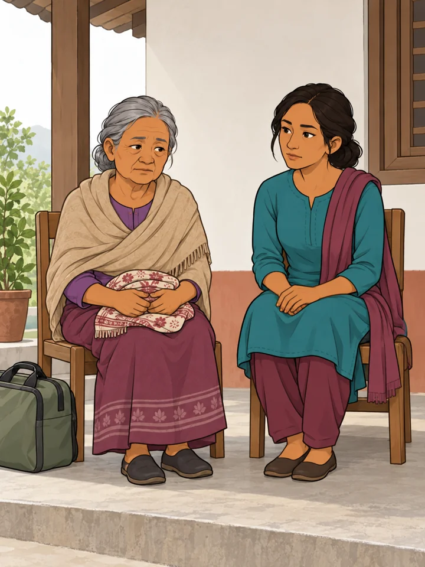
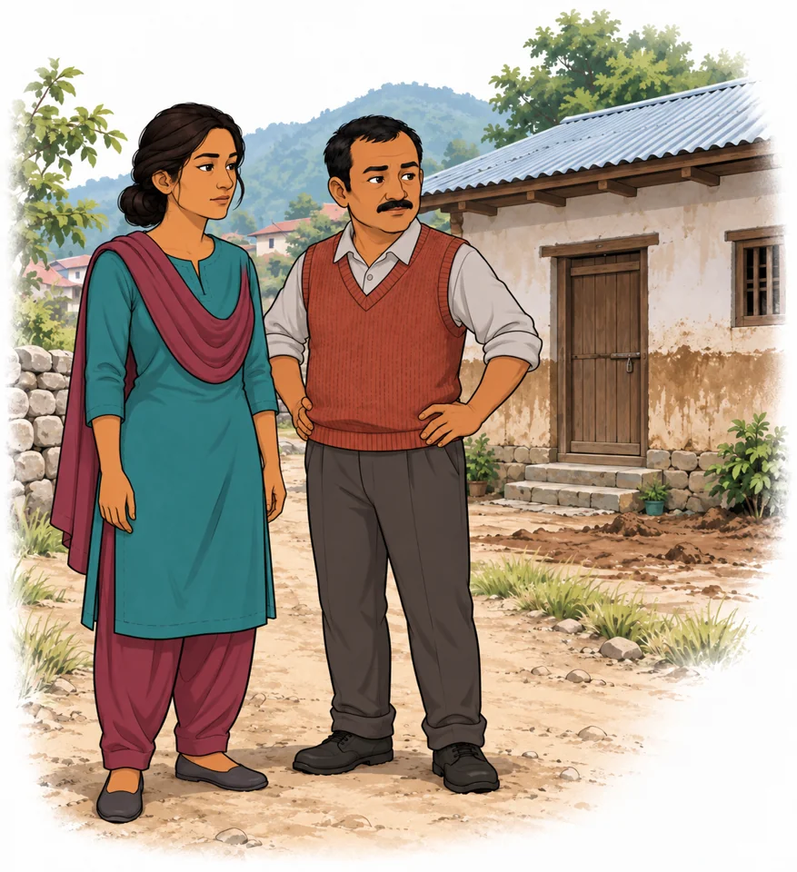
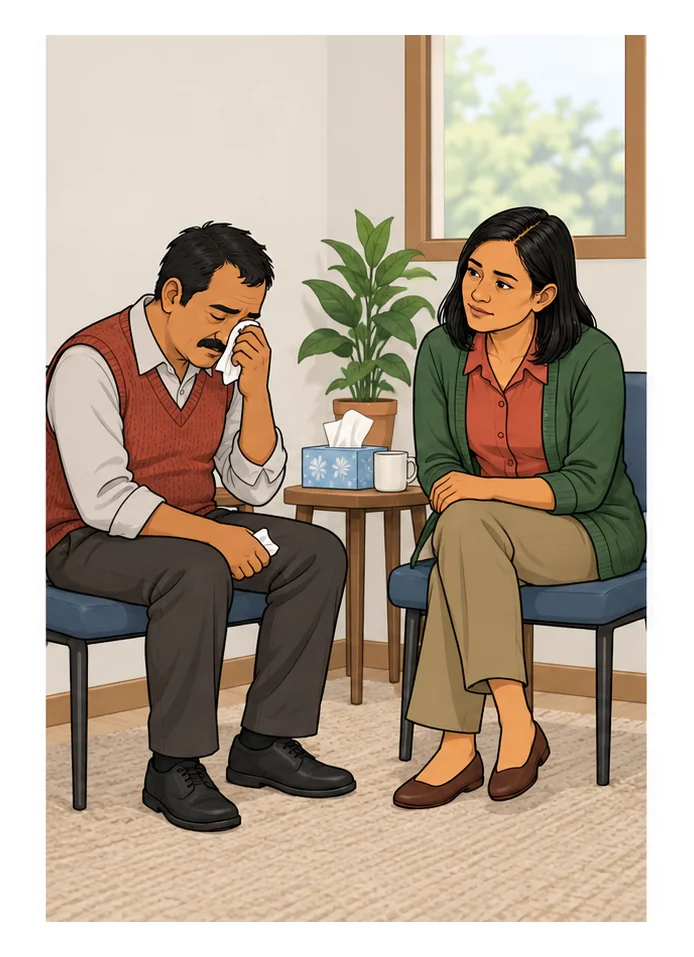
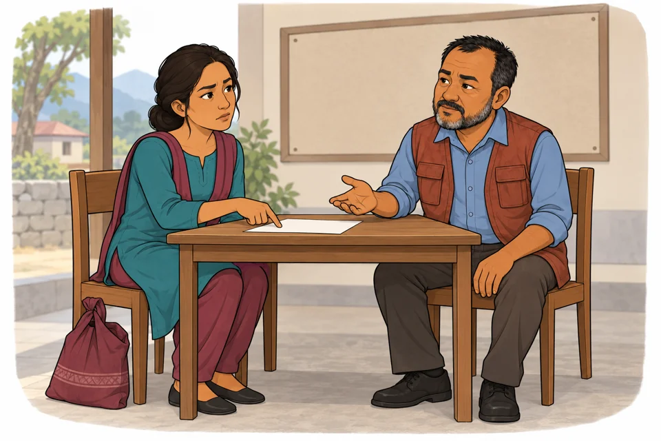
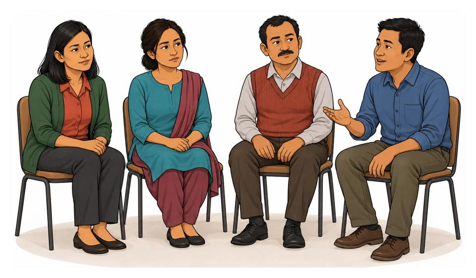

These same versioned scenes are used in the five-lesson English learning usability trial. They are fictional AI-generated Nepal character studies under Adib Asrori creative direction, reused without redrawing. They are not field instructions, culturally validated materials or institutionally endorsed artwork.

Quiet company · returning-home-v0.1. No completed intervention or recovery is implied.

Pause outside · returning-home-v0.1. The image cannot establish that a site is safe.

Attentive presence · body-language-v0.1. The person remains upset; no forced touch or eye contact is shown.

Discussing practical needs · next-steps-home-v2. No medicine or completed referral is depicted.

Conversation · body-language-v0.1. Not therapy, assessment or a required disclosure activity.